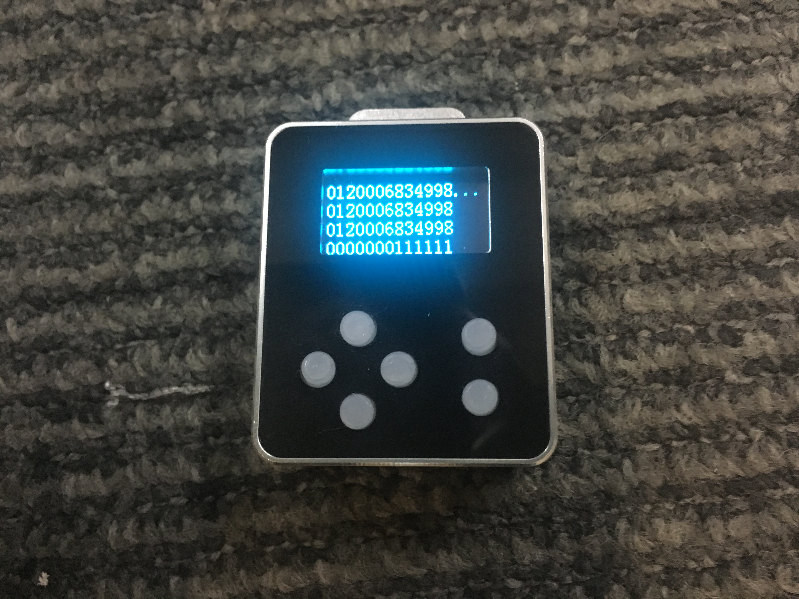

Place the ID card near the antenna area, then highlight the ‘Read ID’ feature and press the ‘selection button’.
The following images shows a successful
The EEPROM can only store up to five groups of ID card numbers, by group we mean VD and ID,
when exceed 5 it will start to overwrite the first group of IDs.
When you select the ‘Simulate ID’ item and press the ‘Selection button’, you can emulate ID card in three ways:
When you select the ‘From Key’ and press the ‘Confirm button’, you can input the ID numbers.
Press the ‘Up button’ to decrease the digit and the ‘Down button’ to increase it.
When you want to input the next number or modifythe previous number, you can press the ‘Left button’ or the ‘Right button’.
After the ID numbers are all set, press ‘selection button’ to start emulate as an ID card.
The device will check the numbers are legal or not (VD: 0~255, ID: 0~4000000000). The first line of the OLED shows the device is emulating or not.
When you select the ‘From ROM’ and press the ‘Confirm button’, you can get the ID numbers stored in EEPROM.

The ‘Inc Attack’ is short for ID auto-increasing attack, which is basically brute force attack,
the device will automatically increase the ID it’s emulating by a number that can be set by the user,
we call this number ’step’, the interval between each change of the ID can also be set by the user.
After setting ‘step’ and interval, press the ‘selection button’ to start the brute-force attack.
The device will check the numbers are legal or not(VD(vendor ID):0~255,
ID:0~4000000000, step:0~99, time interval:0~9.9 ). The state of simulating from
key is displaying in the first line of the OLED.
When you select the ‘emulate ID’ feature and press the ‘selection button’, you can set ID to emulate in two ways.
Like in the emulate ID card section, you can manually input the ID to write to a blank writable card.
Before you press the ‘Selection button’ to write a card, you must put the writable card (eg.T5577) near the 125 KHz antenna region.
Like simulating ID card from ROM, you can refer to the previous chapter.
Before you press the ‘Confirm button’, you must put the writable card (eg.T5577) near the 125 KHz antenna region.
In updating mode you must plug in the USB cable into the Micro USB, and use the software which
can be found by scanning the QR code below.
When you need to update the firmware, select this feature. First line of the OLED is the software version,
and the second line of the OLED is the hardware version. Select ‘Yes’ to update, and ‘No’ to return.
Warning! If you don’t want to update, please don’t select ‘Yes’ in the update interface.
第一步，操作HackID-Plus设备进入bootloader模式：选择主界面“4.Update”—>Yes
Step 1: On the device screen,Navigate to the update page and enter update mode.
第二步，通过microUSB线将设备插入windows电脑USB口，打开上位机升级软件
Step 2：Connect HackID to a windows PC using a microUSB cable and then open the hackidupdatingtool.exe .
第三步：点击刷新按钮，将会出现设备信息，说明设备连接成功
Step 3:Click on the refresh button to see if device information appear which indicate the device is successfully connected.
第四步：选择烧写的文件（.bin），点击upgrade即可
Step 4：Select firmware（the x.bin file）and click on the upgrade button.